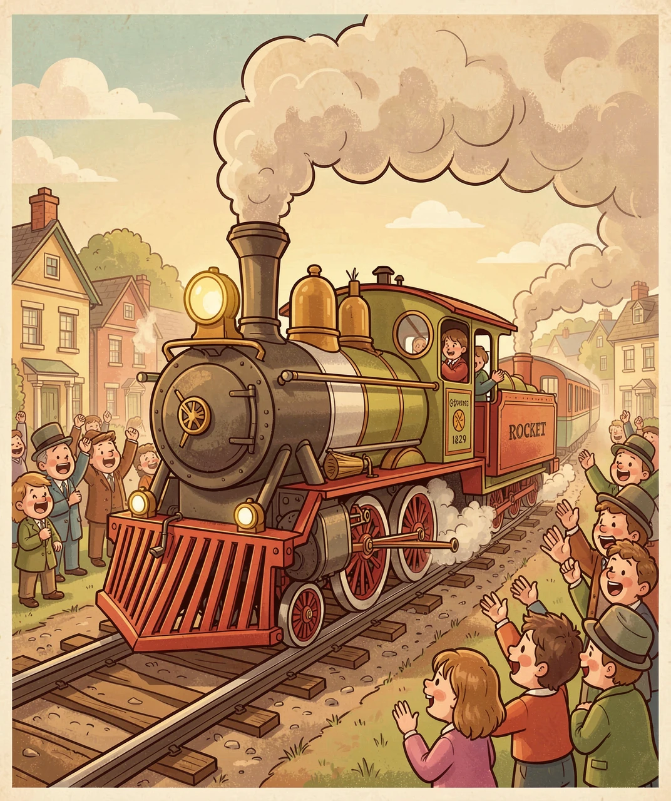
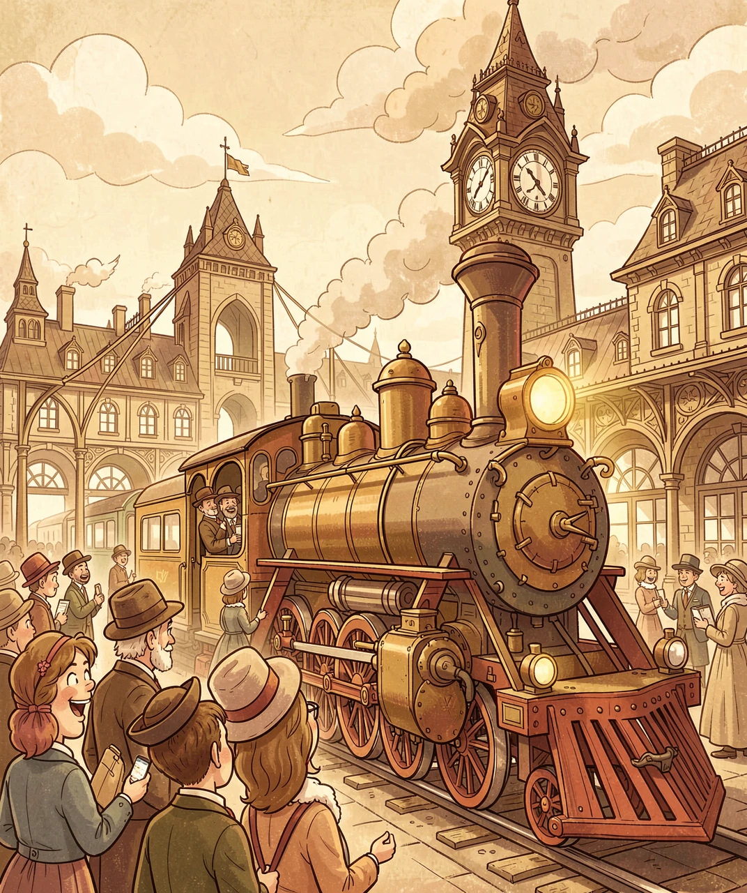
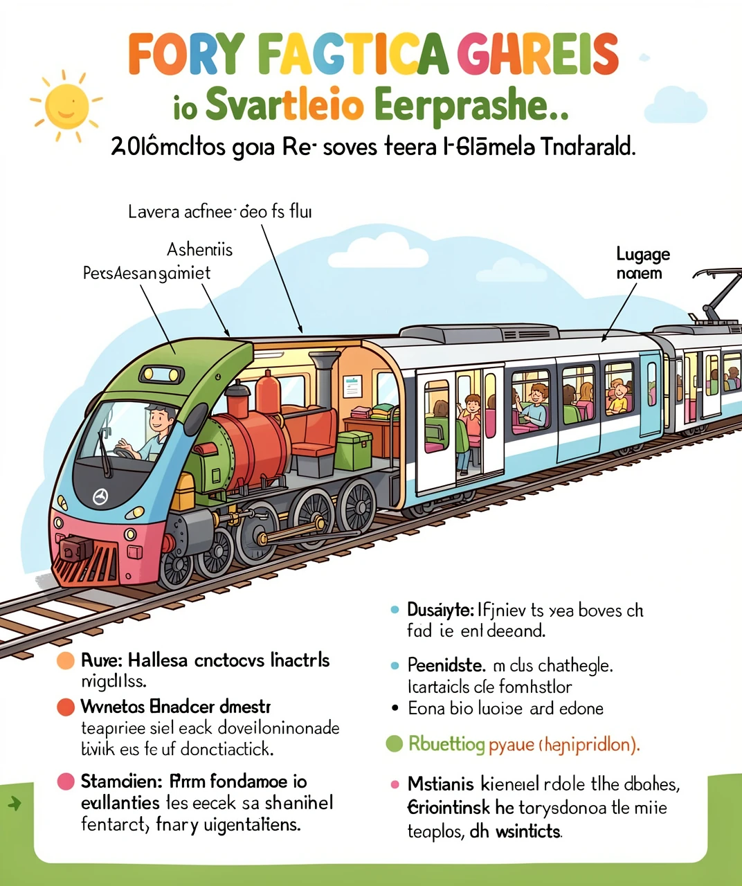
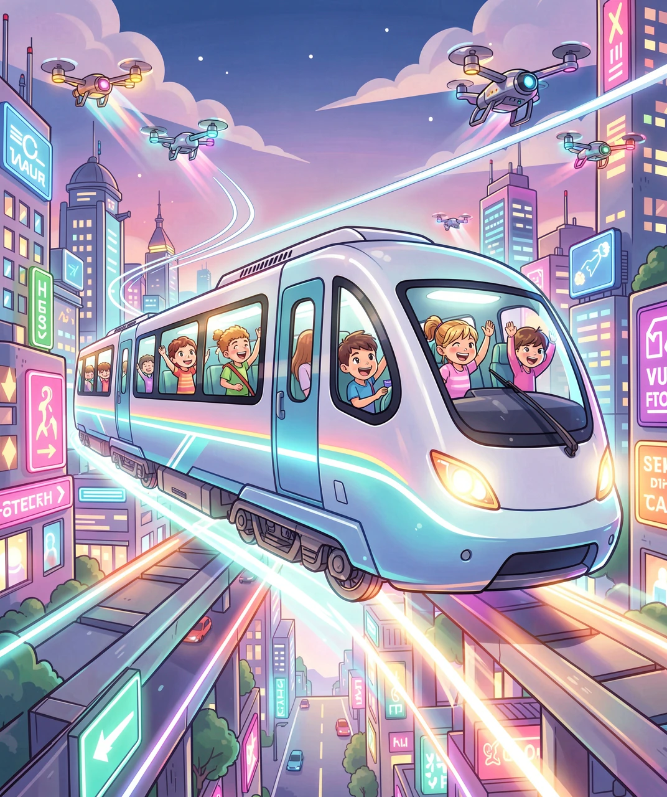

从蒸汽机车到磁悬浮的200年飞跃
很久很久以前，人们出门只能走路、骑马或坐马车。直到200多年前，一个叫理查德·特里维西克的英国人想出了一个大胆的主意：用蒸汽机来推动车子在铁轨上跑！1804年，他造出了世界上第一台蒸汽机车。虽然这台"铁马"只能拉10吨货物和70个人，时速还不到10公里——比你骑自行车还慢——但它开创了一个全新的时代！

🚂 最早的蒸汽机车——轰隆隆的铁马诞生了！
真正让火车变得实用的是乔治·斯蒂芬森。1829年，他设计的"火箭号"（Rocket）在一场比赛中以时速48公里获胜，震惊了所有人！从此，铁路像蜘蛛网一样在英国和全世界铺开，火车成了当时最快的交通工具。
19世纪中期到20世纪初，是铁路的黄金时代。铁路修到哪里，哪里就变得繁华起来。火车不仅运送乘客，还运送煤炭、钢铁、粮食、邮件——它就是那个时代的"互联网"，把整个世界连接在了一起！

🏛️ 维多利亚时代的大火车站——火车改变了整个世界
1869年，美国建成了横贯大陆的铁路，从纽约到旧金山原来要坐船绕南美洲走6个月，现在坐火车只要7天！这条铁路是上万名华工参与修建的，他们冒着生命危险在崇山峻岭中开凿隧道、架设桥梁，为美国铁路建设做出了巨大贡献。
蒸汽火车虽然厉害，但它有好多缺点：烧煤又脏又慢，需要不断加水加煤，还要人工一铲一铲往锅炉里送。到了20世纪，更先进的火车出现了！
🚄 高速列车——风一样的速度！
1964年，日本开通了世界上第一条高速铁路——新干线！"光号"列车以时速210公里飞驰在东京和大阪之间，把原来7小时的旅程缩短到了4小时。全世界都惊呆了：火车居然能跑这么快！
此后，法国的TGV、德国的ICE、中国的"和谐号"和"复兴号"相继问世，火车速度不断被刷新：
| 火车类型 | 最高时速 | 代表 | 动力 |
|---|---|---|---|
| 🚂 蒸汽机车 | ~130 km/h | 火箭号 | 烧煤→蒸汽 |
| 🚃 内燃机车 | ~200 km/h | 东风系列 | 柴油发动机 |
| 🚄 电力动车 | ~350 km/h | 复兴号 | 架空电线供电 |
| 🧲 磁悬浮 | ~460 km/h | 上海磁浮 | 电磁悬浮+推进 |
你有没有好奇过，火车是怎么跑起来的？让我们拆开一列现代电力动车组，看看它的肚子里都有什么秘密！

🔬 火车的身体构造——每个零件都有大用处！
现代高铁的"身体结构"和蒸汽火车完全不同：
🛤️ 车轮和铁轨——高铁的车轮是特殊的合金钢做的，每一寸都经过精密打磨。车轮和铁轨的接触面只有一枚硬币大小！这么小的接触面承受着整列火车的重量，还能稳稳地高速行驶，是不是很神奇？
⚡ 电力系统——车顶的"受电弓"像一只手臂，从架空电线上取电，把25000伏的高压电输送到车厢下面的电机，驱动车轮飞速旋转。
🛑 制动系统——高铁刹车不只是"夹住车轮"，它还用了"再生制动"——把刹车时的能量变成电能送回电网！这就像把下坡的能量收集起来再利用，非常环保。
🌬️ 空气动力学——高铁的车头设计成像子弹头一样的流线型，这可不是为了好看，而是为了减少空气阻力。时速350公里时，空气阻力是最大的"敌人"，流线型车头能减少20%以上的阻力！
火车已经跑了200多年，但它的进化还没有停止！未来的列车会是什么样子呢？

🚀 未来的列车——比飞机还快！
🧲 超级磁悬浮——现在上海磁浮时速460公里，但日本正在建设的中央新干线磁悬浮，设计时速505公里！从东京到名古屋只要40分钟。它利用超导磁体让列车悬浮10厘米在轨道上方飞驰，没有车轮摩擦，没有震动，安静得像在飞行。
🛸 真空管道列车——更疯狂的想法是把磁悬浮列车放进抽成真空的管道里！没有空气阻力，理论上时速可以达到1000-4000公里——比飞机还快好几倍！中国和美国都有团队在研究这个叫"Hyperloop"（超级高铁）的概念。如果实现，从北京到上海可能只要1小时！
🌱 绿色列车——未来的火车会更环保，用氢燃料电池代替柴油，只排放水蒸气；车顶安装太阳能板补充电力；刹车能量100%回收再利用。火车本来就是最环保的交通方式之一，未来会更绿！
🔥 蒸汽机车纪录：202 km/h（英国"飞翔的苏格兰人号"，1934年）
⚡ 电力列车纪录：575 km/h（法国TGV，2007年）
🧲 磁悬浮纪录：603 km/h（日本L0系磁悬浮，2015年）
这些都是专门的试验速度，日常运营速度会低一些，但依然非常快！
从1804年慢吞吞的蒸汽铁马，到今天风驰电掣的高铁，再到未来悬浮在空中飞的超级列车——火车的故事告诉我们：人类的想象力没有终点！也许有一天，你可以坐上比飞机还快的列车，在地底下穿越整个大陆。那时候别忘了，这一切都从200年前一台冒着黑烟的铁家伙开始……🚂✨
💡 答案：1-B 2-B 3-B 4-C 5-B